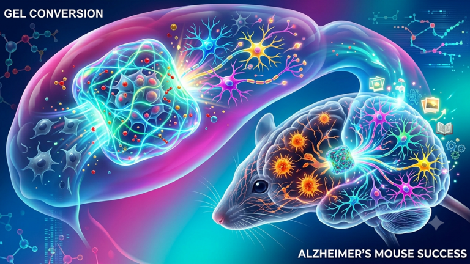

For years, one of the most frustrating facts in neuroscience has been this. Once your brain loses neurons, it basically doesn't get them back. The adult brain can make a few new ones here and there, but nowhere near enough to fix the kind of damage that diseases like Alzheimer's cause. So researchers have spent a long time trying to find a workaround, some way to convince the brain to grow replacement neurons on demand
Gel Conversion
A Gell that turns Brain Cell into Neurons

Source: Research Paper